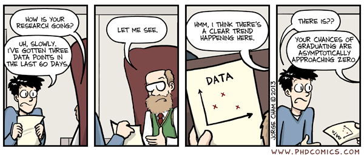

Projects

-
Title: PocketKnocker: Multimodal AI for Non-Destructive Durian Grading & Supply-Chain Routing
Hackathon: Precision & Digital Agriculture Hackathon (Track 4: Food, Supply Chain & Agricultural Systems)
Location: John Deere Technology Innovation Center, Research Park, University of Illinois, Urbana-Champaign
Dates: 13/Nov/2026 to 15/Nov/2026
Award: 2nd Place
Team: Asif Ali, Reed Haas, Kavya Puranam
Description: Developed a two-tier multimodal machine learning pipeline-benchmarking Logistic Regression baselines against Random Forest and Gradient Boosting ensembles-using the AIDurian dataset (6-angle RGB imagery, acoustic knock audio, thermal imaging, and 8-band NIR spectroscopy) to classify durian maturity and ripeness non-destructively. Paired a zero-cost smartphone screening model ("Pocket") with a 4-sensor "Packhouse" escalation cascade, multi-orientation agreement checks, and an asymmetric cost-reward matrix to optimize global supply-chain routing (Export, Domestic, Processing, or Reject) and curb postharvest losses that can reach up to 42%.
Presentation Slides: PDF
GitHub: PocketKnocker (cda-hackathon-26) -
Title: AI Guided Therapeutic Strategies to Combat Viral Evolution
Description: Vaccine and binder design relies heavily on the structural stability of target proteins. Predicting mutations or identifying stable regions can help prepare for the inevitability of future pandemics. Since most mutations maintain a protein's overall fold, Inverse Folding (IF), a technique that generates sequences matching a provided structure could potentially identify stable or highly mutable regions by using positional entropies. This study investigates the SARS-CoV-2 Spike protein using AlphaFold3 to generate a complete 3D model including flexible loops. We used ProteinMPNN and evaluated the minimum number of sequences needed before reaching a point of diminishing returns and observed promising results after only 1000 iterations with slight improvements from 100 iterations. The positional entropies for each amino acid were calculated using the SoftMax formula. Our analysis identified ~448 very low-entropy positions. Information on positional entropies, combined with information on surface exposure, intrinsic disorder, binding capability, epitope regions, and structure prediction confidence scores identified 37 target positions for therapeutic targeting. The entire workflow can be run in a short amount of time and help filter out key regions for binder design using tools such as BindCraft or using InverseFolding and Docking Simulations to design antibodies.
Mentor : Dr. Ersoz Elhan, Department of Crop Sciences, UIUC
Poster presentation: Intelligent Systems for Molecular Biology 2026, Washington DC (ISMB 2026) (Poster ID: C-355 )
GitHub: In preparation -
Title: AI Guided Mutation Prediction and Vaccine Development Using Inverse Folding (IF)
Description: Vaccine and binder design relies on structural stability of the target protein. Being able to predict mutations or identify regions along the protein that do not mutate can help us better prepare for future pandemics. Since most mutations combined do not show extreme structural deviations (RMSD between original and mutant structure is under 3Å) we can use IF to identify regions that are stable or highly mutable based on positional entropies calculated from the resulting fasta file.
Mentor : Dr. Ersoz Elhan, Department of Crop Sciences, UIUC
Poster presentation: Crop Sciences Student Poster Symposium, Fall 2025 (PDF )
GitHub: Inverse Folding & Structural Stability -
Title: Using AI to determine informative sites on Ancient human DNA fragments and to filter out modern contaminant DNA
Description: Analyzed different ML techniques such as Random Forest and CNNs to filter out modern contaminant DNA from ancient DNA samples.
Mentor: Dr. Phillip Johnson, Department of Biology, UMD(CP)
GitHub: In preparation. -
Title: Assessing the capability of Inverse Folding (IF) at predicting binding affinities of antibody-antigen complexes against traditional docking methods
Description: Benchmarked ESM-IF, ProteinMPNN, FoldX, and other tools to see if we can accurately predict binding capability between antibody-antigen complexes using their output scores.
Mentor: Dr. Brian Pierce, Institute for Bioscience and Biotechnology Research, UMD(CP)
GitHub: In preparation. -
Title: Analyzing the importance of RNA loop content on the thermostability and binding capacity of viral RNA to RNA-dependent RNA polymerase (RdRp)
Description: Ran permutation analysis of various RNA sequences to determine if thermostability of RNA loops can impact RNA binding to transcription factors experimentally.
Mentor: Dr. Anne Simon, Department of Molecular and Cellular Biology, UMD(CP)
GitHub: In preparation.